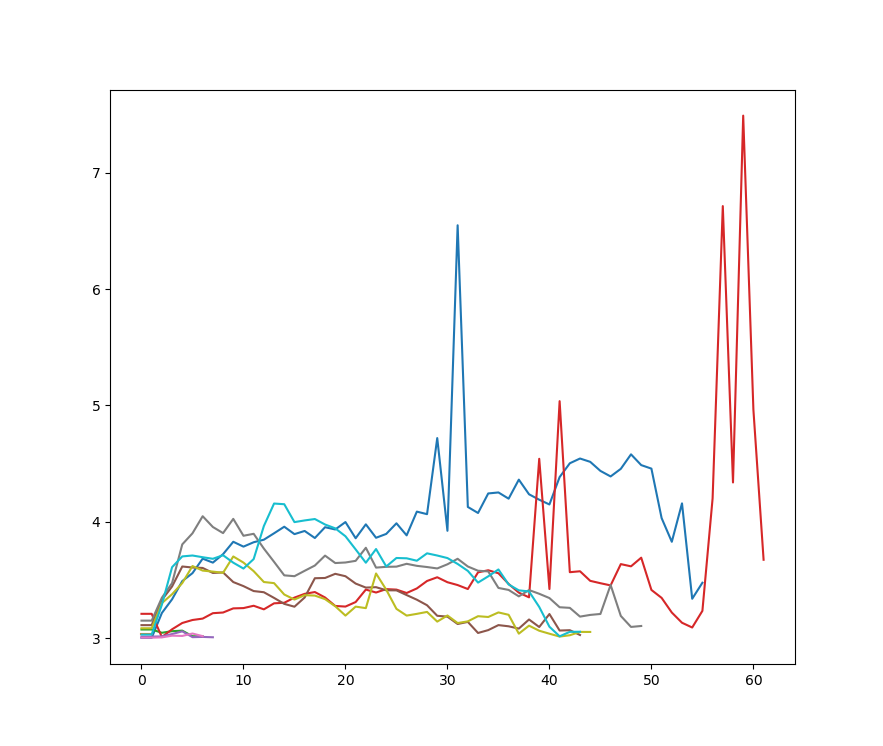
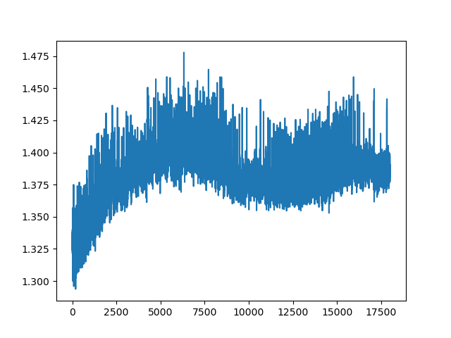
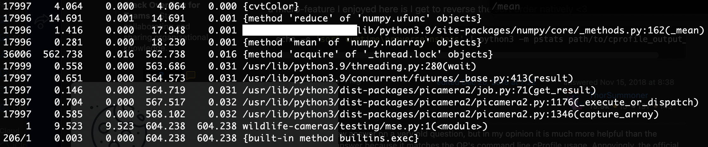

For years, I’ve been wanting to set up an outdoor wildlife camera. Somewhere in the PyImageSearch forums1 there’s a post from 2017-me remarking on how excited I am to have finally gotten my hands on an Nvidia 1080 Ti and, therefore, sufficient horsepower to chew up streaming video from outdoors.
In case some readers are unaware: Athens is a quintessential college town where, even if starting from the middle of downtown, you’re only ever at most 15 minutes from literal cow pastures. As such, encounters with wildlife are frequent and to be expected if you’re spending any decent amount of time here.
It’s always the year of the rabbit
There was a stretch of time, also back around 2017 I think, where our bunny Clover would occasionally2 wake us up in the middle of the night by thumping. Again, for those who may not know, rabbits will thump if they sense danger as a way of warning those around them. Clover in particular is also known to thump when she’s having fun, but these few times when we woke up and checked, she was doing her best statue imitation in between thumps, strongly suggesting she really was scared of… something.
We never figured out what, exactly. Best guess: her super-sensitive rabbit ears + eyes picked up something prowling outside in the dark that our duller human senses just couldn’t perceive. Which also gave me a specific application for night cameras beyond simple curiosity: to try and figure out what, if anything, was making Clover nervous (I even had an idea to include some kind of seismometer so I could sync up the offline video analysis with Clover’s thumps, but it’s been years since she last woke us up with thumping so I figure I missed the moment).
I normally like deer
But I was still curious about the nearby wildlife. This only intensified in the summer of 2021: unusually ravenous deer3 ate all the lilies in our front yard before they even bloomed. An idea formed to sync a night camera up with a programmable drone that could, after identifying the deer in the yard, harass them away from the lilies. Oddly, summer 2022 was a return to normal: only one flower was eaten early on in the season; the other few dozen went through their full lifecycle, never getting eaten.
But even so, I still wanted to see what was cruising around our neighborhood.
Bring on the over-engineered solution
Yes, dear reader–years have passed in this retelling with little to no progress on the wildlife front. I will readily admit this project suffered what most personal projects do. I will say this, though: in my defense, 2018 through 2021 was the back half of my tenure-track appointment. Couple that with welcoming my daughter, and the onset of a global pandemic… yeah. A liiiiittle bit of burnout4, plus a LOT of higher-priority items to worry about than a wildlife camera for the sake of curiosity.
But by summer 2022, I finally had something physically taking shape–head over to my July 2022 blog post to check it out, complete with photos! I even mounted the birdhouse outside, calibrated the camera’s field of view, and wired it all up… but then left it for several more months.
Now I’m finally getting some hard, empirical data on how it’s all working. And man, it’s going to be a challenge to have this work well.
Technical challenges
Legion.
By far the biggest challenge I’m dealing with is how resource-constrained the Raspberry Pi 3B+ is. I’m working with 1GB of RAM, though the effective memory available at any given moment is maaaybe 75% of that; as such, 66% is the safe margin I operate with. Another limitation is the SD card size (effectively the hard drive of the Pi): at least when I purchased it, the limit was 32GB. That’s now no longer the case, but I haven’t gotten around to reformatting it, so it’s still a 32GB limit for now.
This effectively means that capturing lots of video for testing purposes is difficult. Even reasonable resolutions like 1280x720 at 30fps will exhaust the little Pi’s memory after a mere 4 minutes of video capture, assuming all the buffering was happening in RAM.
I looked into streaming the video directly as it’s captured; that was, after all, the idea I had behind purchasing the 1080 Ti back in 2017. However, the 3B+ wifi operates only on the 2.4GHz band, which… is unfortunately shared by our baby monitor. Thus, whenever the Pi is transferring data over the air, the baby monitor becomes completely unusable.
So the upshot here is
- I need to dramatically downsample the incoming video feed, and
- any real-time processing I want to do (including downsampling) has to be done on the Pi itself
I have been looking into things like power-over-ethernet to try and solve #2 (though it would require running an ethernet cable outside, which has its own challenges), and I’ve been running some experiments on the most effective downsampling methods for #1. I’ve also been strongly considering simply upgrading the Pi to a 4B when they become available again, as they can operate on the 5GHz wifi band, and can go up to 8GB of memory. Together, these two immediate fixes would dramatically simplify the situation. But Pi 4s most likely won’t be readily available again until Q2 this year (a few months from now, at least).
Logistical challenges
There are a ton of unknowns when it comes to what kind of data I can expect. Already the few experiments I’ve run have shown a wide variability in the video I capture in the context of trying to decide on-the-fly what to keep and what to discard.
The Picamera2 library also recently entered “beta” (from “alpha”). While that’s most certainly a positive development, it still means the library is undergoing substantial changes, and so not only may functionality change very suddenly, but–as I’ve already been encountering–existing functionality is often poorly documented, if at all. It took me some time to piece together how to configure both high-res and low-res video streams to capture the full field of view of the camera (relative to the camera’s native resolution), rather than cropping out a section, as is what would happen with most of the configurations in the examples folder.
Oh, yeah: I also have a full-time job, and a toddler. So those are definitely logistics to be considered.
Experiments
I have run a few experiments to get a feel for what to expect. The latest commit (as of writing this post) shows what the experiments more or less look like. Here are the highlights:
- A dual-stream video recording configuration, where the high-res is set to 1640x1232 and the low-res is 410x308.
- The camera runs for a fixed period of time (in the script, it’s 8 hours).
- During that time, a continuous loop does the following:
- Grab a frame from the low-res stream.
- Convert this frame from YUV to grayscale (Picamera2 requires low-res feeds to be in YUV; fortunately, this step doesn’t seem too arduous).
- Compare this frame to the previous frame by way of calculating mean squared error (MSE). This provides some measure of how much has changed from one sequential frame to the next.
- If MSE exceeds some threshold, start recording a video with the high-res stream. Continue recording so long as MSE exceeds that threshold.
- If MSE drops below that threshold and stays there for a certain length of time, stop the high-res stream.
- Hang onto all MSE measurements.
That’s the basic gist. It’s functional, if blunt. Fortunately, I’ve already collected some interesting data. For instance, here’s an MSE plot from one 8-hour experiment I ran. Important to note: these MSE measurements are only from the events that exceeded the MSE threshold (I’m running separate experiments to try and determine what a baseline MSE looks like).

One’s first reaction to this plot might be “Huh, there’s a wide variability in the things that can trigger MSE to exceed the threshold!”. And that would most certainly be correct. But even more complicating is the fact ALL of these events are of the same thing: a car driving by on the street. Not only is it not really something I’m interested in–it’s a wildlife camera, after all–but clearly MSE is ill-suited as a method for identifying the kind of event behind it.
I ran a second experiment over 10 minutes to investigate what MSE baselines might look like (and I’m currently running a longer one; results TBD), but basically you have something that looks like this:

My take-away from this plot is: given the 30fps capture rate (or very close to it; at least, depending on how much real-time processing I try to cram in), very little changes from one frame to the next. Empirically, it’s a little more than a single pixel. However, there’s a lot this plot doesn’t tell me, such as:
- What are the effects of weather, such as wind or rain, on the baseline MSE? (not a clue)
- How does absolute MSE change with respect to resolution, fps, or other camera settings? (in theory, MSE should scale with resolution; fps could at least be simulated by systematically downsampling, though upsampling would be more difficult)
- What are the effects of night vs day on MSE? (again, in theory this shouldn’t be a huge deal, as I only plan to operate the camera at night)
- How can MSE identify two separate events vs something like a person who stands still long enough to make it seem like two separate events? (it probably can’t)
Anyway, I’m running a 24-hour test right now that will hopefully provide at least a little more intuition into the role of MSE vs the real world, if not any outright answers to the above questions.
Finally, I did want to get some feel for the overall performance of the code itself. I wanted to try and understand what I was working with in terms of options for real-time processing. So I ran a profiler on the same 10-minute experiment I ran above, and this is what came back:

This was comforting to see, as I had been worried the real-time conversion of YUV to grayscale may have been a bigger performance hit; turns out, it’s over two orders of magnitude less problematic than Picamera2 internals, and an order of magnitude less so than the numpy.mean function call for calculating MSE (and this is something I might be able to optimize a bit with some clever leveraging of in-memory data structures).
I was even able to look at the timestamping of the MSE calculations themselves to see that, by far, I was very close to the 30fps sampling rate of the camera itself, meaning I definitely have some head room for additional real-time operations. Granted, this concern has always been secondary to memory constraints, but still: it’s good to know where the hard limits are, and where we have some room to operate.
Ongoing
It’s clear that, if there are animals prowling around at night, they don’t elicit much of a reaction from MSE, meaning I’m going to need smarter methods of teasing them out. One thought I had was considering both MSE magnitude and duration, but for that I’d need a much more thorough understanding of the role of the baseline MSE (hence the 24-hour experiment). Another thought I had was combining this with a window of frames, rather than just instantaneous MSE over a pair of frames. Finally, I also wanted to look into some basic (non-DL) object detection in OpenCV, since considering first-order image features like edges and corners might be more sensitive to small animals walking around while also keeping added computationl and memory demands at a minimum.
Stay tuned!
Footnotes
RIP.↩︎
Every few months, so not very often. The impressive bit here is that a 4.5lb rabbit could wake up two snoring humans through multiple walls and a closed door.↩︎
We assume. We didn’t have the camera in place to confirm, but we did hear numerous anecdotes from folks also suggesting the deer were weirdly ravenous and less fearful of humans that year.↩︎
Hopefully obvious understatement.↩︎
Citation
@online{quinn2023,
author = {Quinn, Shannon},
title = {Setting up a Wildlife Camera},
date = {2023-02-15},
url = {https://magsol.github.io/2023-02-15-calibrating-a-wildlife-camera},
langid = {en}
}